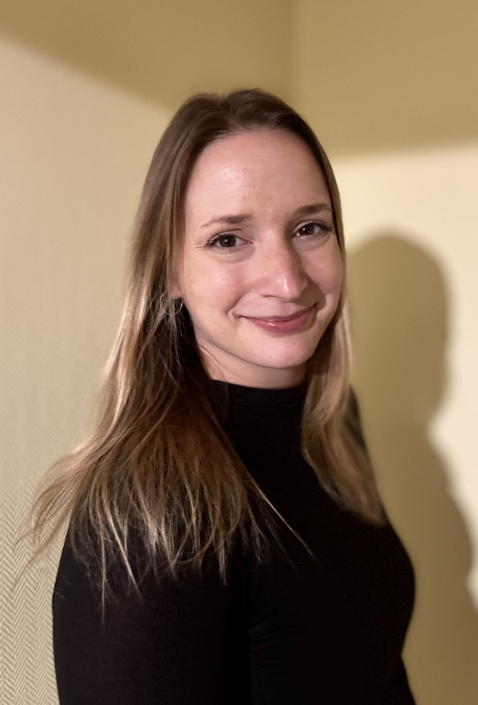

Hiszem, hogy minden gyermek a saját tempójában fejlődik, és ehhez a fejlődéshez más-más támogatásra lehet szükség. A korai években minden apró lépés fontos. Konduktorként a 0–5 éves gyermekek fejlődését támogatom komplex szemlélettel, a gyermek egyéni szükségleteihez és a család mindennapjaihoz igazodva.
Időpontot kérek →Kelemen Virág vagyok, konduktor és drámapedagógus. Elsősorban a 0-3 éves gyermekek korai fejlesztésével és 3-5 gyermekek fejlesztésével foglalkozom magyar és angol nyelven. A foglalkozásokat Budapesten, a XIII. kerületben tartom. Szakmai tapasztalatot belföldön és külföldön egyaránt szereztem eddigi munkám során. Munkám középpontjában a prevencióra épülő, komplex fejlesztés áll, hiszen a korai életszakaszban nyújtott támogatás hosszú távon is meghatározó szerepet játszik a gyermekek fejlődésében.
Minden gyermek egyedi, saját fejlődési ütemmel és képességekkel. Konduktorként célom, hogy segítsem a gyermekek fejlődését, és támogassam a családokat abban, hogy a bennük rejlő lehetőségeket minél jobban kibontakoztathassák. A komplex korai fejlesztés során születéstől 5 éves korig foglalkozom azokkal a gyermekekkel, akiknek mozgásfejlődése vagy más fejlődési területe támogatást igényel. A fejlesztést minden esetben a gyermek egyéni szükségleteihez és a család igényeihez igazítom. Munkám alapja a konduktív pedagógia komplex szemlélete, amely a gyermeket egészében tekinti. A mozgásfejlesztés mellett hangsúlyt kap a figyelem, az érzékelés, a kommunikáció, a gondolkodás, az önállóság és a mindennapi készségek fejlesztése is. A foglalkozások játékosak, élményközpontúak és életkorhoz igazítottak, biztonságos, elfogadó légkörben. Fontosnak tartom a szülőkkel való együttműködést, a folyamatos kommunikációt és a mindennapokban is jól alkalmazható gyakorlati tanácsok átadását. Hiszem, hogy a közös munka teremti meg a gyermek fejlődésének legjobb alapját. Szeretettel várom Önöket egy személyes találkozásra, ahol együtt megtaláljuk gyermekük számára a legmegfelelőbb fejlesztési utat.
Indulás 3 jelentkezőtől
1139 Budapest
Országbíró u. 44-46
virag.kelemen.konduktor@gmail.com
+36 30 256 3054
Add meg az adataidat, és néhány napon belül visszajelzek a szabad időpontokról.